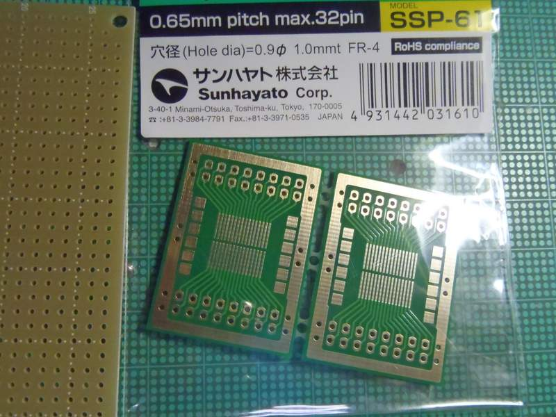

Sorry, under construction and Japanese only,Yet...
DSPラジオ その2(2013-03-22)
もくじ
これは何か
どのようなものか
製作
ICの実装
ユニットテスト
バーアンテナを巻いてみよう
電子工作系もくじへ
全体目次へ
これは何か
DSPラジオモジュールの中身はどうなってるのだろうか？
と言う事で、この中に使われてるらしい、中国製ラジオICのDSP6919(リンク先はデータシートですが、簡体中国語です。気合で読んで下さい（笑）)をアイテンドーから買って試して見ました。
が、それは終わることのない泥沼の始まりだった…この絡みでXM7/SDLが全く進まない状況に(；´Д｀)
どのようなものか
今回使ったのは、DSP6919です。結論から言うと、DSP443の中の石とはアナログ特性が少し違うようです。
これを前回と同じようなプリアンプを乗っけて高感度にしていこう。というものです。
これを書いてる3/22現在も開発やら調整やらが続いています！↓に示す回路図は一部暫定的なものです
使用可能周波数帯は中波〜短波〜FM放送です。
IC自体は非常に小さいです。TSSOP 28pinで、ピン間隔は0.65mmです。後、普通のTSSOPよりも少しだけ幅が狭いので秋月通商で売ってる変換基板だと確実に失敗するのが、なんともチャイナクォリティ。(いや、変換基板が秋月クォリティなのか？(；´Д｀)）
秋月の変換基板を使って強引につけようとして失敗しました＿|￣|●
回路図とgSCH用のDSP6919のシンボルセット+おまけ
製作
ICの実装
DSP6919は非常に小さいTSSOPなICなので、変換基板が必要です。サンハヤトのSSP-61を使います。

変換基板にICを付けます。
まず、半田でピン間を溢れさせ、
ハンダ吸い取り線で綺麗に吸い取って行きます。終わったら、テスターでピン間ショートをチェック。この時、3-4ピンがショートを示しますが、ここは同じGNDなのでスルーして構いません。
それでも微細なひげやボールが残ってるかも知れないので、ルーペで見て不安な所は綺麗に掃除してあるこて先を使って拭っていきます。
次に、変換基板上に実装した方がいい部品…U2,L1,C2…を実装して行きましょう。
ユニットテスト
では、変換基板にヘッダピンで足を付けて、予め作っておいた周辺回路(回路図P1からバーアンテナを取り除いてダミーのL2を載せてる回路)の基板と組み合わせてみましょう
…アレ？上手く鳴らない(；´Д｀)
理由を考えてみます。
・感度が低い(プリアンプでフォローしてきましょう)
・敗戦配線間違いとか(これは大丈夫だった)
・データシートの回路図が腐ってる！(多少そういう可能性は無きにしも非ずなのがチャイナクォリティだが、この段階ではそういうことは考えてはいけません(；´Д｀))
・L1のチップコイルが入手の関係で47nHだった→これはあるかもしれない(ﾟДﾟ)
L1を丁度手元にあったT-37#12に適当な単線を五六回ほど巻いてやってきましょう？アレ？なんか聞こえるような気がしてきた、聞こえない？(；´Д｀)
危ないけどアンテナをMW_INにつないでみよう…音が割れてるが何か聞こえてる…音が割れていたのはAFNだった(；´Д｀)
そして、何故かTBS(954KHz)が聞こえず、秋田放送(936KHz)が綺麗に聞こえる。
よくわからないがすげー(；´Д｀)ふつーだと、秋田放送なんてTBSに被って聞こえないのに。
前に作ったDSPモジュール用に試作していたプリアンプをつなぐと、
秋田放送の代りに何故か山形放送(918KHz)が聞こえてくる。しかも、NHK第一・第二やラジオ日本などが聞こえない。
選局範囲が狭すぎる上にわけわかんねーよ(TдT)
とりあえず調整すれば何とかできそうなので、気を取り直して次に進むことにします。
プリアンプ（試作中)
ここまでで、既に数日以上の作業時間を費やした＿|￣|●
バーアンテナを巻いてみよう
前のDSP-443が意外と感度が低くて、しかも中波の入力が壊れやすいので直にアンテナつなぐわけにもいかなさそうだったので、とりあえず回路図p1のL2のようにバーアンテナを巻いて見ることにしました。
秋葉原ラジオデパート3Fにある、シオヤ無線などでバーアンテナのコアが買えます。通販で入手しやすいのはサトー電気かな。
長さ10cm,直径10mmの物を使っています。送信所が近い所で使う人や一戸建て木造住宅の人は小さなバーアンテナをかってもいいでしょう。
只、コアの透磁率とかが大概不明な上にMW入力は非同調なので
（と思ったが、よくよく考えてみたら選局に使ってる約285KHz前後のパルスの回りこみをC9とL2でキャンセルしてる)大体で大丈夫です（嗚呼いい加減…)
厚紙をコアに巻きつけ、セメダインCなどで接着して絶縁層を作ります。乾くまで接着面を押さえつけましょう。
後、接着剤には巻きつけるUEW線の絶縁塗装を侵食する溶剤が含まれることがあるので、接着剤はよく乾かして下さい。
さて、線を巻いて行きましょう。0.2mm〜0.17mmのポリウレタン線を使います。
巻き始めはホットメルトで留めます。
線は密巻きにします。つまり、巻きつつ左（巻き始め側）に線材を寄せ、切りのいいところでホットメルトで固定していきます。これを120巻分繰り返します
一次側が出来ましたヽ(゜∀゜)ノ
二次側も出来ましたヽ(゜∀゜)ノ
只、上記の理由により、真面目に巻き数を管理したほうがいいかもです。インダクタンスの確認は、LCRメータで。私は未だ持ってないけど(；´Д｀)
出来あがりを試すために、本回路(p1のみ)と一緒に本番の基板に組み込んでいきます。そして、プリアンプを接続します。秋田放送の代りに山形放送ばかり聞こえるのは相変わらず。°(/□＼*)°。でも、（夜の）聞こえ方は相当よくなりました。問題は、昼間だ…
…つづく。（ぉ
写真選びに疲れたよ(；´Д｀)いいえ、世間に負けたの(；´Д｀)
次回予告：プリアンプの泥沼やらL1調整の泥沼やら。何とか昼間にTBSかニッポン放送のどちらかが聞こえて、夜中はそこら辺〜AFN、NHK第二(秋田送信所？)が聞こえるようにはなってます。しかし、SWとFMのプリアンプは未だ決定稿が出来てないです(；´Д｀)
本ドキュメント・及びノウハウは CC BY SA v3.0で公開します。
CC BY SA v3.0で公開します。
実装技術等の特許登録はこれを禁じます。(DO NOT PATENT THIS TECHNIQUES)
後日問題が出た場合は変更の可能性あり。
Radio using DSP6919 by http://sky.geocities.jp/artanejp/ELECTRONICS/
is licensed under a Creative Commons
Attribution-ShareAlike 3.0 Unported License.
電子工作系もくじへ
全体目次へ
Last Update: 22 Mar.2013 by Artane. ( whatisthis.sowhat _a_t gmail.com )